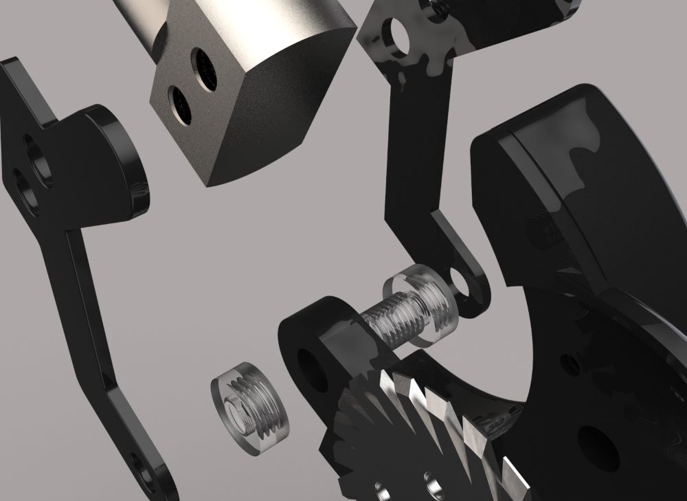
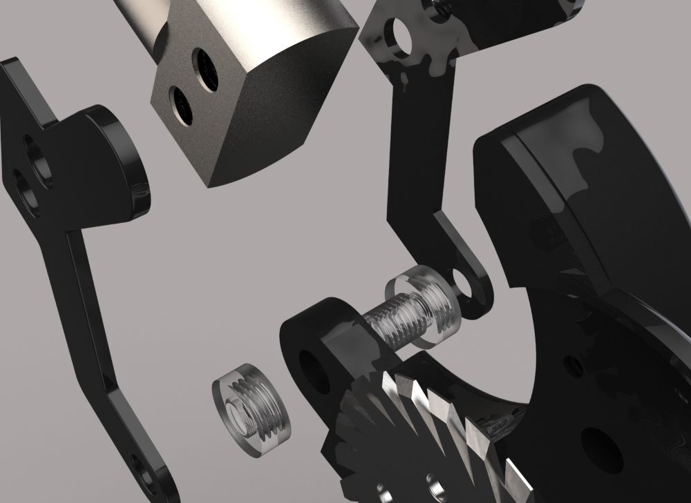

Approach
The design process followed the double diamond model, the biggest focus for this project was improving the usability and efficiency of the current armourslice cable stripping tool. I also needed to ensure the final product was feasible for mass manufacture.
I created a range of concepts using a refined success criteria. The tool was required to fit into confined work spaces while remaining ergonomically sound. Through questionnaires, interviews and prototype testing I refined the idea to maximise usabilty.

Goals
The goal was to improve the function and efficiency of the C.K tools' current line of armourslice SWA cable strippers.
Outcome
The research, specification and final concept were taken for development and manufacture by the C.K product development team.
 
